{kind=link}
{kind=link}
{kind=link}
{kind=link}
{kind=link}
{kind=link}

The design of the AGC went through several stages, which for the
sake of this discussion we'll call "blocks". However, the
different block designs, while similar in many ways, were quite
different in others. Rather than try to cover all of them on
this one page, the different blocks are covered in separate pages:
However, this page confines itself just to the Block I
design.
It would be very easy, I think, particularly if you only looked at it very superficially, to dismiss the Block I AGC as a computer that was merely a rebranded but otherwise almost-identical version of the Block II. But in fact, I think it would be fairer to say that in spite of family resemblances, these are quite-different machines for which somebody went to a lot of difficulty to make the development experiences seem very similar. Having dealt with both of them at some level of detail, I'll say that using what you know about the one with the other is a quick path to frustration.
Here is a nice little 30-minute documentary in which the Block I AGC and DSKY are demonstrated and various interesting details of their internal construction and manufacture are discussed, by people such as Eldon Hall, Albert Hopkins, and Ramón Alonso, whose names you will see mentioned elsewhere on this page and this site:
Of these, MIT/IL document R-393 is the principle documentation of
the Block I computer system — or at least it was prior to
obtaining engineering drawings and ND-1021041 as mentioned above —
but it is important to recognize that its descriptions are not
entirely accurate. By this I mean not merely that it
contains mistakes — as, indeed, any documentation of a
sufficiently-complex system will — but that the design of the
system was extended after document R-393 was written, so that some
of the later-superceded information in it is blatantly wrong to
the point of making anything based on it non-functional. The
most-glaring discrepancy is the memory map, which R-393 describes
as being 1024 words of read/write memory and 12 1024-word banks of
read-only memory, whereas there were in fact 24 banks of read-only
memory by the time of the Solarium (Apollo 6 unmanned mission)
software mentioned above. In other words, Solarium
wouldn't have fit into the amount of memory R-393 describes.
Finally, it's worth noting that people often seem to believe that
the electrical schematics of the Block I AGC are contained in the original
PDFs which John Pultorak published of his Block I AGC simulation.
While
those are fine schematics, and worked well for John's purposes,
they are not transcriptions of the original Block I schematics,
but are rather schematics John designed from scratch, based on the
textual descriptions he found in R-393. In the first of his
PDFs, there is a detailed diary of what he did, and everything in
it refers back to R-393, but not to the original schematic
diagrams of the Block I, which were not available to him.
Thus, while John's work on reverse engineering the Block I AGC
essentially from R-393 alone is a stunning tour de force —
after all, his gadget ended up working! — his schematics
may or may not be valuable resources for you, depending on your
purposes.
The Block I AGC was provided in two different configurations, one
for the Command Module (then referenced as the C/M), and one for
the Lunar Module (at that time still called the LEM, or Lunar
Excursion Module). Even though personally still bummed out
(fifty years later) over the change from LEM to LM, for
consistency I'll refer to the spacecraft here as the CM and LM and
forego the temptation to instead talk about the LEM.
The physical configurations of these were different in terms of
form factor, weight, and memory capacity — and of course, software
— and here are the highlights:
Of course, that's merely the summary. If you really wanted
full details of what the Block I AGC was like, then you'd have to
narrow your focus to just the specific mission you were interested
in and consult the engineering drawings themselves. In fact,
here are some links to those engineering drawings for the Block I
(unmanned) missions flown:
That's not to say that those were the only versions of
the Block I AGC, and there were plenty more that never went on a
flown mission! On the other hand, also not intended to imply
that all of these models were very different. They
were, after all, completely compatible in terms of the software
they could run.
No Block I LM missions ever flown, and I'm not aware of any Block
I LM software, so I can't comment on whether the LM Block I AGC
requirements listed above are accurate.
| 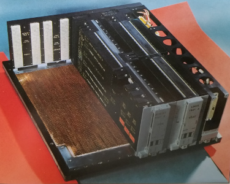 |
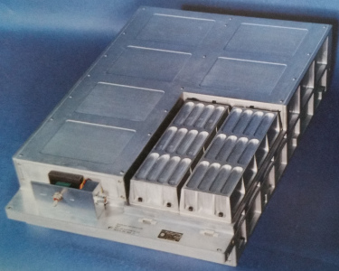 |
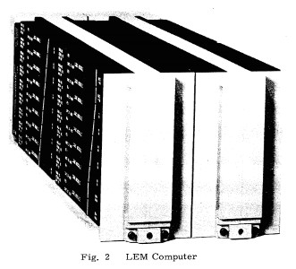 |
|
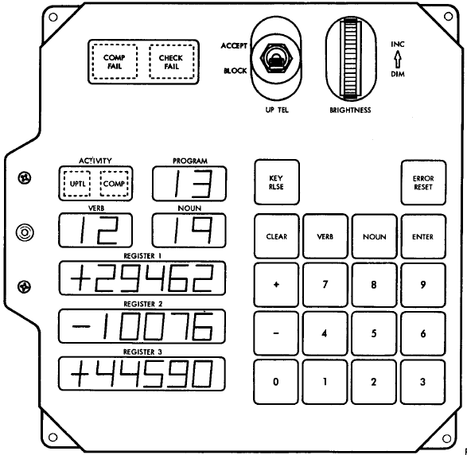 |
The digital uplink was simply a way to have a remote keypad on
the ground, which could transmit keystrokes via radio to the AGC
aboard the spacecraft as if it were a DSKY. In other words,
the only data the uplink could transmit corresponded to DSKY
keypad codes. The keycodes were identical to the 5-bit DSKY
keycodes as described in the preceding section, but if (say) a
5-bit keycode of bits B5 B4 B3 B2 B1 were to be
transmitted, they were supposed to be packaged into the following
16-bit format for the uplink:
where the overbar implies the logical-complement of the bits: 0 is replaced by 1 and vice-versa. The uplink was, of course, serial: the leading 1 was transmitted first, and the least-significant B1 last. As each bit was received, it was shifted into the least-significant bit of the CPU's UPLINK register at address 041, which was initially all zero, and the other bits in the register were shifted upward by one position. When bit 16 of the register eventually became 1, an UPRUPT interrupt was triggered, and the AGC's UPRUPT interrupt-service routine could read the register, zero it, and process the data it had received. Of course, the way the data was packaged within the transmitted word, it was triply redundant and could thus be checked for corruption and discarded if it was found to be corrupted.1 B5 B4 B3 B2 B1 B5 B4 B3 B2 B1 B5 B4 B3 B2 B1
TBD
What the MIT Instrumentation Laboratory designed and provided for
the Block I Command Module included not merely the AGC and its
DSKYs, but rather than entire Guidance & Navigation (G&N)
systems for the Command Module. The G&N system consisted
of quite a few additional components, of which some of the more
important were:
In some sense, the IMU is the most important of all, more so than
the AGC and DSKY, since (I believe) the IMU was what Doc Draper
originally developed and attempted to hawk to the military, and
was the Instrumentation Lab's entrée into Apollo in the first
place. The IMU existed long before the AGC was even a gleam
any any designer's eye. The AGC and DSKY, from that point of
view, were just a way of interacting with the IMU, and without the
IMU there really wasn't much of an excuse for MIT/IL to be
involved in Apollo at all. But since our focus here is
really just the AGC and DSKY, I won't really be covering these
other very-important "peripheral" components at all.
Nevertheless, if you want to know about them we do still have
quite a collection of documents
and engineering drawings covering the entire G&N system.
Here's a portal into electrical and mechanical engineering
drawings for the flown versions of the Block I G&N system:
BB,AAAAwhere BB is an octal bank number from 01 to 034, and AAAA is an octal offset into that bank from 06000 to 07777. Only banks 01 and 02 have the special short addresses 02000 through 05777, and they are invariably referred to in that way rather than in the BB,AAAA form.
The information in this section should not differ from equivalent
information for Block II, so if you are confident you understand
that, then there's no reason to read it. However, it is not
merely cut-and-pasted from corresponding Block II descriptive
material, and so may (or may not) be useful in itself.
Almost all AGC memory words consist of 16 bits, of which 15 bits
is "data", and a 16th bit is a parity bit that the AGC hardware
can access for the purpose of testing for corruption. If you
were to build an AGC or to create a hardware simulation of an AGC,
that parity bit would be an important thing to understand and
account for, since parity violations are detectable by hardware,
cause alarm indicators to trigger, and so on.
On the other hand, my own preoccupation in this site, in so far
as Block I is concerned, is making Solarium and other Block I
programs available within a software simulation of the AGC.
Parity is completely irrelevant to that usage, because such an
environment is not an embedded one, and parity is just a confusing
distraction ... so I don't care about parity, my software
simulation doesn't care about parity, and I won't mention parity
again. As one of the original AGC developers commented to
me, "parity schmarity", and I think that about sums it up.
Consequently when I talk about AGC memory, it will almost always
be in terms of 15-bit words.
But there are some exceptions. Certain reserved memory
locations, which aren't always (strictly speaking) contained in
erasable memory even though addressed as such, consist of 16 bits,
but the 16th bit is not parity; rather, it is an indication
of "overflow". The principal example of such a privileged
location is the "accumulator register", A, discussed in
the next section. That's because all results of most kinds
of arithmetical operations are deposited directly into the
accumulator, and if an operation such addition has overflowed,
that will first be manifested in the accumulator. Various
subsequent operations on that data will behave differently
depending on whether or not (or how) overflow is manifested within
the accumulator. There are also hidden registers, not
addressable by software, and overflow within those registers may
have significant implications just like overflow in the
accumulator does.
I have been chided for liking to think of "overflow" is if it
were a condition that has occurred, such as "the accumulator has
wrapped around from positive to negative" and thus overflowed, or
"the accumulator has wrapped around from negative to
positive". That's a poor way to think about overflow in this
architecture, for a couple of reasons:
Before getting to the exact encoding of overflow information,
though, let's briefly talk about the 1's-complement representation
of numbers. Consider a 15-bit number with bits B15 B14
... B1. This representation can store 214-1=16383
distinct
positive numbers (1 through 16383), and 214-1=16383
distinct negative numbers (-1 through -16383). Zero actually
has two distinct representations, +0 and -0, which act the same
for some purposes and differently for others. In
other words, +0 and -0 are not completely interchangeable with
each other. The positive numbers are encoded the same way
they would be in 2's-complement:
Negative numbers, in the other hand are not encoded the same way, but are simply the logical complements of the corresponding positive numbers. For example,0 (decimal) = 000 000 000 000 000 (binary)
1 (decimal) = 000 000 000 000 001 (binary)
2 (decimal) = 000 000 000 000 010 (binary)
3 (decimal) = 000 000 000 000 011 (binary)
4 (decimal) = 000 000 000 000 100 (binary)
...
16383 (decimal) = 111 111 111 111 111 (binary)
12345 (decimal) = 011 000 000 111 001 (binary)
so
-12345 = 011 000 000 111 001 = 100 111 111 000 110
Now, in 1's-complement there is no "sign bit" as such. In
other words you can't turn (say) 3 into -3 or vice-versa by just
flipping one bit. Nevertheless, in the examples above, the
most-significant bit, bit 15, does indicate the sign, and
therefore you can tell whether a number is positive or negative by
testing bit 15. For that reason, bit 15 is sometimes called
the "sign bit" and is sometimes designated by the special symbol
SG = bit 15 = "sign bit"
For those special 16-bit memory locations, like the accumulator,
a regular, non-overflowed number will have its 16th bit identical
to its 15th bit. It also has a special designation:
UC = bit 16 = "uncorrected sign bit".
In other words, for numbers without overflow, SG = UC
(=0 if positive or =1 if negative). For numbers with
overflow, though, this is not the case. There are two
possibilities for numbers with overflow:
The tricky aspect here is that when overflow exists, it is UC
that is regarded as the "real" sign of the number, and not UC.
When
the 16-bit form of a number (say, in the accumulator) needs to be
converted to a normal 15-bit number (say, to be stored at a
location in erasable memory), what happens is that the UC
bit steps in and kicks the SG bit out of the way:
UC SG B14 ... B1 (16 bits) → UC B14 ... B1 (15 bits)
Let's consider an example of this in action. Imagine we
want to increment the largest possible positive number, 037777, by
1. Start by just using the same old binary arithmetic you're
familiar with, without worrying about "1's-complement" vs
"2's-complement" or overflow:
0 011 111 111 111 111 + 0 000 000 000 000 001 → 0 100 000 000 000 000
Having done that, though, we now have overflow, and specifically
"positive overflow", since UC = 0 and SG = 1
do not agree with each other. And if we were to save this as
a 15-bit number, UC = 0 would shift down to overwrite
the SG = 1, and we'd simply have 000 000 000 000 000, or
just 0.
There's also a variety of 15-bit registers:
PROGRAMThus, each one of the designations in [brackets] represents a displayed digit or else a +/- sign. For example, [VD1] is the left digit of the "verb". The value of each of signs is determined by a particular combination of WWWW and S fields, while each of the digits is determined by a particular combination of WWWW and AAAAA or BBBBB fields. The specific mapping used is:
[MD1] [MD2]
VERB NOUN
[VD1] [VD2] [ND1] [ND2]
REGISTER 1
[R1S] [R1D1] [R1D2] [R1D3] [R1D4] [R1D5]
REGISTER 2
[R2S] [R2D1] [R2D2] [R2D3] [R2D4] [R2D5]
REGISTER 3
[R3S] [R3D1] [R3D2] [R3D3] [R3D4] [R3D5]
| WWWW |
S |
AAAAA |
BBBBB |
|---|---|---|---|
| 017 |
(cannot
occur) |
||
| 016 |
(see below) | ||
| 015 |
(see below) | ||
| 014 |
(see
below) |
||
| 013 |
n/a |
MD1 |
MD2 |
| 012 |
FLASH |
VD1 |
VD2 |
| 011 |
n/a |
ND1 |
ND2 |
| 010 |
UPACT |
n/a |
R1D1 |
| 007 |
R1S + |
R1D2 |
R1D3 |
| 006 |
R1S - |
R1D4 |
R1D5 |
| 005 |
R2S + |
R2D1 |
R2D2 |
| 004 |
R2S - |
R2D3 |
R2D4 |
| 003 |
n/a |
R2D5 |
R3D1 |
| 002 |
R3S + |
R3D2 |
R3D3 |
| 001 |
R3S - |
R3D4 |
R3D5 |
| 000 |
(normal, inactive state) |
||
| AAAAA or BBBBB |
Displays |
|---|---|
| 000 |
blank |
| 025 |
0 |
| 003 |
1 |
| 031 |
2 |
| 033 |
3 |
| 027 |
4 |
| 036 |
5 |
| 034 |
6 |
| 023 |
7 |
| 035 |
8 |
| 037 |
9 |
Counter/timer registers are registers in erasable memory which
are automatically incremented or decremented by specific actions
of the hardware, independent of the operation of the
software. Thus, the software may (in some cases) usefully
load an initial value into them, but for the most part just polls
the contents of these registers when it needs to do so. In
some cases too, an overflow of one of these registers may trigger an interrupt.
Numerical formats are identical to those for the Block II AGC,
and I advise you to read the
description of them that appears in the Block II discussion.
In reading about the effects of the various "basic" instructions
below, there are several notational conveniences that you should
be aware of:
As for why it may be necessary to distinguish "before" from
"after", one reason is the
so-called "editing registers" discussed earlier, namely LP,
CYR, SR, CYL, and SL.
Recall that when you write to such a register, what's
saved in the register isn't the value you're theoretically writing
to it, but rather an "edited" form of that value. For
example, with CYL this editing process is to rotate all
the bits to the left. Some instructions have as a side
effect re-writing the operand, denoted (if the operand is K)
by
C(K) = b(K)
Thus even though a given instruction is seemingly using its
operand as input rather than for output, if the operand is an
editing register, it may be automatically rewritten, and that
means it will be re-edited every time the instruction is used.
A couple of points about the Block I basic instruction set that
may not be obvious at first glance are:
| Description: |
"Add" |
| Syntax: |
AD K |
| Operand(s): |
K is any address in
memory. |
| Timing: |
2 MCT or 3 MCT |
| Octal: |
060000 + K |
| Notes: |
This instruction adds the
contents of a memory location to the accumulator:C(A) = C(A) + C(K)It does, however, have the side effect C(K) = b(K)which means that if K is an editing register, then it will be edited. It should be noted that for any number x, x + -x = -0Moreover, if the accumulator contains overflow after the addition, the OVCTR register is modified as follows, thus taking one extra MCT to do so:
|
| Description: |
"Clear accumulator and add
from fixed memory" |
| Syntax: |
CAF K |
| Operand(s): |
K is any address in
fixed memory (06000-07777). |
| Timing: |
2 MCT |
| Octal: |
030000 + K |
| Notes: |
This instruction loads C(A)
with C(K):C(A) = C(K)The value is sign-extended before being loaded into the accumulator. The opcode is numerically identical to the XCH instructions, with the difference being that K is in fixed rather than erasable memory. |
| Description: |
"Count, Compare, and Skip" |
|||
| Syntax: |
CCS K |
|||
| Operand(s): |
K is any address in
fixed memory. In other words, it cannot be in
erasable memory. If less than 06000 it is in
fixed-fixed memory, while if in the range 06000 to 07777 is
in banked fixed memory and the Bank register is
used to determine the applicable memory bank.
Sometimes the TC occurs then Bank holds
00000, which is actually interpreted as bank 03. |
|||
| Timing: |
2 MCT |
|||
| Octal: |
010000 + K |
|||
| Notes: |
This is used for conditional
jumps and for loop control, and has several effects. K
must be in erasable memory, and is thus the address of a
variable. The operand is sign-corrected or
sign-extended before use, depending on whether it is from a
16-bit register or 15-bit memory. The accumulator (A) is loaded with the "diminished absolute value" of the operand, C(A) = DABS( b(K) )where DABS(x) is defined as Also, K is rewritten, C(K) = b(K)so K is edited if it is an editing register. Lastly, a comparison is performed, and a jump is made on the basis of that comparison:
If K has a 16th bit (for example, if it is the
accumulator), it is the 16th bit (UC) which determines the
sign, and not the 15th bit (SG). Note: the latter description is at odds with
the description on p. 3-4 of R-393, which says that C(K)
rather than b(K) is what's tested for the
comparison. But
John Pultorak's simulator (and mine) behave the way
I've described here, and I trust John's reading of the
control-pulse sequences more than I trust R-393. Of
course, John got the pulse sequences from R-393,
so it's a vicious cycle! The issue may need to be
revisited later. |
| Description: |
"Complement" |
| Syntax: |
COM |
| Operand(s): |
None |
| Timing: |
2 MCT |
| Octal: |
040000 |
| Notes: |
This instruction is actually
just a mnemonic for "CS A" and
hence just negates (take a bitwise inverse) of the
accumulator:C(A) = -C(A) |
| Description: |
"Clear and Subtract" |
| Syntax: |
CS K |
| Operand(s): |
K is any address in
memory. |
| Timing: |
2 MCT |
| Octal: |
040000 + K |
| Notes: |
This instruction loads the
accumulator with the negative of the contents of a memory
location:C(A) = -C(K)which is just the bitwise inverse. It does, however, have the side effect C(K) = b(K)which means that if K is an editing register, then it will be edited. |
| Description: |
"Double" |
| Syntax: |
DOUBLE |
| Operand(s): |
None. |
| Timing: |
2 MCT or 3 MCT |
| Octal: |
060000 |
| Notes: |
This instruction is a
mnemonic for "AD A", and hence doubles the
accumulator:C(A) = b(A) + b(A)If the accumulator contains overflow after the addition, the effect on the OVCTR register is as described for AD. |
| Description: |
"Divide" |
| Syntax: |
DV K |
| Operand(s): |
K is any address in
memory. |
| Timing: |
18 MCT |
| Octal: |
050000 + K |
| Notes: |
This is an "extended"
instruction, meaning that it is coded asEXTENDor by some operation such as INDEX K0that produces a 16-bit DV instruction value ... i.e., whose bit 16 is non-zero. Thus even though the octal value of the instruction is shown above as 050000+K, and that's what appears in the rope and how the assembler sees it, in fact by the time it is executed it is really 0120000+K, which is how the CPU sees it. Logically, though not at the control-pulse level, what you can think of this instruction as doing is:
This instruction envisages that |b(A)| < |C(K)| but does make some statements about what should happen in other cases
C(K) is unchanged, unless K is itself A, Q or LP. |
| Description: |
"Extend" |
| Syntax: |
EXTEND |
| Operand(s): |
None. |
| Timing: |
2 MCT |
| Octal: |
025777 |
| Notes: |
This is a mnemonic for
special form of the INDEX instruction which is
used for producing the necessary overflow
in the MP, DV, or SU
instruction following it, in a way that enables those
instruction types, which would otherwise be interpreted as TS,
AD, and MASK instructions. In other
words, the most-straightforward way to use these extended
instructions is asEXTENDHowever, using EXTEND require a little preparation, because the assembler actually treats it as a mnemonic for "INDEX 05777" which will have embarassing results at runtime if the appropriate value isn't actually at address 05777 at runtime. Solarium uses the following code, which assembles the same as "OCT 47777", so that's what I'd suggest doing: SETLOC 5777 # STANDARD LOCATION FOR EXTENDING BITSHow does this actually work? Well, suppose you needed to "extend" the instruction SU 1234: EXTENDThese two instructions are the same as INDEX 5777 and OCT 61234, respectively, so when the CPU gets to the SU, the instruction that the CPU will be trying to execute is (because of sign-extension) 0147777+0161234, which equals 0131234 (in 16-bit 1's complement addition, if there's a 1 in bit 17, which there was in this case, it's removed and 1 is added to the number). The top 4 bits of this 16-bit sum are CCCC=1011, which tells the CPU that it's an SU instruction, but the operand is still 01234. All of which is, of course, rather convoluted, but it doesn't matter since all you have to remember is that if you stick the EXTEND in front then it magically works. |
| Description: |
"Index" |
| Syntax: |
INDEX K |
| Operand(s): |
K is any address in
memory other than 016, 017, or 025. If less than 06000
it is in erasable or fixed-fixed memory, while if in the
range 06000 to 07777 is in banked fixed memory and the Bank
register is used to determine the applicable memory
bank. Sometimes the TC occurs then Bank
holds 00000, which is actually interpreted as bank 03. |
| Timing: |
2 MCT |
| Octal: |
020000 + K |
| Notes: |
This instruction does not
affect execution flow — i.e., the next program-counter
location after INDEX is at L+1 — but next
instruction value used is not C(L+1) but rather
C(L+1)+C(K). In other words, the value stored
at K is added to the next instruction value found. This effect can be used for several purposes:
C(K) can be either positive or negative. |
| Description: |
"Inhibit interrupts" |
| Syntax: |
INHINT |
| Operand(s): |
None. |
| Timing: |
2 MCT |
| Octal: |
020017 |
| Notes: |
This instruction causes all
interrupts to be inhibited until a RELINT
instruction is executed. It is actually a mnemonic for an "INDEX 17", but there is not actually any register at address 017, and the hardware treats this code specially rather than as an INDEX instruction. |
| Description: |
"Mask" |
| Syntax: |
MASK K |
| Operand(s): |
K is any address in
memory. |
| Timing: |
2 MCT |
| Octal: |
070000 + K |
| Notes: |
This instruction takes the
bitwise AND of the contents of a memory location and the
accumulator:C(A) = C(A) & C(K)It does, however, have the side effect C(K) = b(K)which means that if K is an editing register, then it will be edited. |
| Description: |
"Multiply" |
| Syntax: |
MP K |
| Operand(s): |
K is any address in
memory. |
| Timing: |
8 MCT |
| Octal: |
040000 + K |
| Notes: |
This is an "extended"
instruction, meaning that it is coded asEXTENDor by some operation such as INDEX K0that produces a 16-bit MP instruction value ... i.e., whose bit 16 is non-zero. Thus even though the octal value of the instruction is shown above as 040000+K, and that's what appears in the rope and how the assembler sees it, in fact by the time it is executed it is really 0110000+K, which is how the CPU sees it. This instruction multiplies two single-precision (i.e., 15-bit) values, from a memory location and the accumulator (sign-corrected), and produces a 29-bit value stored in the accumulator (more-significant word) and the LP register (less-significant word). In other words, since the ranges of the input and output are each ±214, the range of the product must be just ±228, or 29 bits in all; the sign bit is duplicated into each of the two words, making a total of 30 bits. C(A,LP) = b(A) × b(K)The signs of the two output registers are identical, and are identical to the product of the signs of the two inputs ... which sounds obvious until you recognize that it covers cases like -0 × +53 = -0. C(K) is unchanged, unless K is itself A or LP. Note: R-393, p. 3-7, says that this instruction take 10 MCT. John Pultorak's simulator command-sequence simulator says that it takes 8, and for the present time, I accept what John says. |
| Description: |
"No-op" |
| Syntax: |
NOOP |
| Operand(s): |
None. |
| Timing: |
2 MCT |
| Octal: |
030000 |
| Notes: |
This instruction is a
mnemonic for "XCH A", i.e., exchange the contents
of the accumulator with itself. Since that doesn't
have any effect other than to use up a couple of MCT, it is
a "no operation". |
| Description: |
"Overflow indicator (?)" |
| Syntax: |
OVIND K |
| Operand(s): |
K is any address in
fixed memory. |
| Timing: |
2 MCT if the accumulator
contains no overflow, 3 MCT if the accumulator contains
overflow. |
| Octal: |
050000 + K |
| Notes: |
This instruction is actually
identical to TS, and is simply a different
mnemonic for it that is less confusing when the operand is
fixed memory, because when the operand is fixed memory it is
impossible to copy the accumulator to the operand.
However, all other behavior (setting accumulator to 000001
or 177776 and skipping the next instruction on overflow) is
identical to what has been described for TS. |
| Description: |
"Overflow skip" |
| Syntax: |
OVSK |
| Operand(s): |
None. |
| Timing: |
2 MCT |
| Octal: |
050000 |
| Notes: |
This instruction is a
mnemonic for "TS A", though its behavior is not
precisely identical to what you'd expect TS A to
do, since C(A) is not modified even if there is
overflow. As you may expect, its action is to continue to the next address if the accumulator does not contain overflow, but skips the next address and proceeds to the address after that if the accumulator does contain overflow. |
| Description: |
"Release interrupts" |
| Syntax: |
RELINT |
| Operand(s): |
None. |
| Timing: |
2 MCT |
| Octal: |
020016 |
| Notes: |
This instruction causes all
interrupts to be re-enabled after a corresponding a INHINT
instruction has disabled them. It is actually a mnemonic for an "INDEX 16", but there is not actually any register at address 016, and the hardware treats this code specially rather than as an INDEX instruction. |
| Description: |
"Resume" from interrupt |
| Syntax: |
RESUME |
| Operand(s): |
None. |
| Timing: |
2 MCT |
| Octal: |
020025 |
| Notes: |
This instruction is
numerically equivalent to "INDEX 25", but is not an
INDEX instruction. As mentioned before, when an interrupt occurs,
it automatically performs a sequence of steps likeInhibit interruptswhere (recall) B is the register that holds next instruction that would have been executed when the interrupt occurred. (Not necessarily C(L), since an INDEX instruction might have preceded it an altered the numerical value of the instruction.) Note that this interrupt inhibition is a different mechanism from the one used by INHINT and RELINT. What RESUME does is to undo these steps: C(B) = C(BRUPT)This has the effect of putting the program counter (Z) back to what it had been before the interrupt, restoring any return address that had been in Q, and executing the same instruction (numerically) that had been about to execute, regardless of whether it's what was stored at the return location or not: i.e., regardless of whether or not the interrupt had occurred between an INDEX instruction and the instruction following it. Notice that in theory, you could force any instruction you like to execute upon return from interrupt, simply by replacing the contents of the BRUPT register from within the interrupt-service routine. Why you might want to do that, I can't say. |
| Description: |
"Return" |
| Syntax: |
RETURN |
| Operand(s): |
None. |
| Timing: |
1 MCT |
| Octal: |
000001 |
| Notes: |
This instruction is a mnemonic for "TC Q", meaning that it can be used to return from a subroutine. |
| Description: |
"Square" |
| Syntax: |
SQUARE |
| Operand(s): |
None. |
| Timing: |
8 MCT |
| Octal: |
040000 |
| Notes: |
This is an "extended"
instruction, meaning that it is coded asEXTENDThus even though the octal value of the instruction is shown above as 040000, and that's what appears in the rope and how the assembler sees it, in fact by the time it is executed it is really 0110000, which is how the CPU sees it. This instruction has the effect C(A,LP) = b(A) × b(A)and all of the comments for MP apply to it. |
| Description: |
"Subtract" |
| Syntax: |
SU K |
| Operand(s): |
K is any address in
memory. |
| Timing: |
2 MCT or 3 MCT |
| Octal: |
060000 + K |
| Notes: |
This is an "extended"
instruction, meaning that it is coded asEXTENDor by some operation such as INDEX K0that produces a 16-bit SU instruction value ... i.e., whose bit 16 is non-zero. Thus even though the octal value of the instruction is shown above as 060000+K, and that's what appears in the rope and how the assembler sees it, in fact by the time it is executed it is really 0130000+K, which is how the CPU sees it. This instruction subtracts the contents of a memory location from the accumulator: C(A) = C(A) - C(K)In all other respects — timing, side-effects, special cases — it is identical to the AD instruction. |
| Description: |
"Transfer control to address
in A" |
| Syntax: |
TCAA |
| Operand(s): |
None. |
| Timing: |
2 MCT |
| Octal: |
050002 |
| Notes: |
This instruction is a
mnemonic for "TS Z", though its behavior is not
precisely identical to what you'd expect TS Z to
do, since there is no skip-on-overflow. Suppose that the initial contents of the accumulator, b(A), is the logical OR b(A) = OP | Kwhere only the 4 most-significant bits of the 16-bit value OP may be non-zero, and only the least-significant 12 bits of K may be zero. The operation of TCAA will be:
But there's a tricky aspect to this, in that since TCAA
is still a "transfer to storage" operation, this means
that the 16-bit Z register will in fact have its
upper 4 bits loaded with OP, and those upper 4
bits remain set unless you explicitly set them to
something else! In other words, the lower 12 bits of
Z will continue to change as we advance from one
instruction to the next, but the upper 12 bits won't
change. However, the upper 4 bits of the Z
register are normally 0, and if OP isn't zero,
that leaves a potential problem lurking for the
future. The problem is what happens when the next TC
instruction is encountered. Recall that a TC
instruction, in addition to transferring control, also
loads the Q register with the return
address. Now, that's a shorthand way of saying that
Q gets loaded with a TC to the return
address. But if OP isn't zero, then what
that eventual TC loads into Q is not a
TC to the return address, but some other
instruction (OP) whose operand is the return
address. Of course, a TC which is a simple "jump"
won't have a problem, since it won't expect to find any
return address, and the problem will occur only if you're
using it as a call to a subroutine. All of which boils down to saying that unless you intend
to exploit this wacky feature, don't use this instruction,
or else make sure you get the upper 4 bits of Z
set back to zero somehow before the next subroutine call
you want to use! |
| Description: |
"Transfer Control" |
| Syntax: |
TC K |
| Operand(s): |
K is any address
whatever in memory. If less than 06000 it is in
erasable or fixed-fixed memory, while if in the range 06000
to 07777 is in banked fixed memory and the Bank
register is used to determine the applicable memory
bank. Sometimes the TC occurs then Bank
holds 00000, which is actually interpreted as bank 03. |
| Timing: |
1 MCT |
| Octal: |
000000 + K |
| Notes: |
This is used both for
unconditional jumps to locations, or for calling
subroutines. It can be done for the latter because a
side effect is thatC(Q) = L + 1i.e., that the Q register is loaded with the next address following the TC instruction (and the original value of Q is lost), and a return from a subroutine can be done with the instruction TC QBut there's no stack, so you have to be extremely careful when doing things like calling subroutines from within other subroutines, because each call destroys the existing return address. So one thing that subroutines typically do is to save the Q register as a variable immediately upon entry , and to restore it from that variable immediately prior to exiting. The instruction TCR does not differ from TC in any way, but it may clarify the intention of your source code to use TCR when you are calling a subroutine from which there will be a return, and TC when you are performing a simple jump. However, this seems to have been done very seldom in a program like Solarium. Note that a return from interrupt is not done in this manner, and requires its own dedicated instruction, RESUME. |
| Description: |
"Transfer to Storage" |
| Syntax: |
TS K |
| Operand(s): |
K is any address in
erasable memory (0-01777). |
| Timing: |
2 MCT if the accumulator
contains no overflow, 3 MCT if the accumulator contains
overflow. |
| Octal: |
050000 + K |
| Notes: |
This instruction always
copies the accumulator to memory,C(K) = C(A)If K is 15-bit memory, then A is sign-corrected (i.e, the 16th bit US is moved to the 15th bit SG) before storing. If K is an editing register, then editing is performed during storage. Skip on Overflow
If the accumulator does not contain overflow, then that is the end of the operation. But if the accumulator does contain overflow, then the following "skip on overflow" operation (which occupies an additional 1 MCT) is performed:
|
| Description: |
"Execute C(A) using
Q" |
| Syntax: |
XAQ |
| Operand(s): |
None. |
| Timing: |
1 MCT |
| Octal: |
000000 |
| Notes: |
This instruction is a
mnemonic for "TC A", meaning that it will:
INDEX A |
| Description: |
"Exchange" |
| Syntax: |
XCH K |
| Operand(s): |
K is any address in
erasable memory (0-01777). |
| Timing: |
2 MCT |
| Octal: |
030000 + K |
| Notes: |
This instruction exchanges C(A)
and C(K). If K is an editing
register, it is edited in the process of doing this. The opcode is numerically identical to the CAF instructions, with the difference being that K is in erasable rather than fixed memory. Note: The Virtual AGC Block I simulator will not change C(K) if K happens to be one of the input registers, IN0 - IN3. |
The pseudo-ops are a subset of those in Block II. Actually,
yaYUL supports the identical pseudo-ops for Block I as it
does for Block II, but some of those pseudo-ops simply make no
sense for Block I and therefore will never appear in actual
code. I know I should have yaYUL exclude the nonsensical
pseudo-ops, but I have no present intention of doing so. See the
Block II description.
# Pattern 1:Now, each operator employs a certain number of operands, either 0 or 1, and you would superficially expect the number of operands in the equation to add up to the number of operands required by the operators. However, this is seldom true, and there can be either more or less operands than you would expect.
OPERATOR
OPERAND1
.
.
.
OPERANDN
# Pattern 2:
OPERATORA OPERATORB
OPERAND1
.
.
.
OPERANDN
# Pattern 3:
OPERATOR0 M
OPERATOR1A OPERATOR1B
.
.
.
OPERATORMA OPERATORMB
OPERAND1
.
.
.
OPERANDN
# Pattern 4:
OPERATOR0 M
OPERATOR1A OPERATOR1B
.
.
.
OPERATORM
OPERAND1
.
.
.
OPERANDN
As has been explained above, the Block I AGC's "basic
instructions" (i.e., the assembly-language instructions as opposed
to interpretive instruction) mostly require 2 machine cycle times
(MCTs) to executed, although the TS instruction usually
takes only 1 MCT, and others like MP or DV
take considerably more. One MCT requires about 11.7 μs, or
more-precisely, 12/1.024 = 11.71875 μs (plus or minus
whatever the clock tolerance is, of course).
That is the viewpoint from the abstraction level of "basic
instructions", and is the world-view enforced by our Block I CPU
simulator, but does not represent the underlying physical reality
of hardware AGC. From the physical standpoint:
The sequence of control pulses corresponding to a basic
instruction is, of course, its "control-pulse sequence". In
theory, any question about the ultimate behavior of any given
basic instruction can be answered by analyzing its control-pulse
sequence closely enough, although this can be quite a challenging
proposition, particularly for complex instructions like MP
or DV. For example, when the DV
instruction was defined earlier, certain constraints were placed
on the dividend vs the divisor, and if those constraints weren't
satisfied, we merely stated that the results were undefined.
However, they're not undefined, and you can find out what the
result should be if you analyze the control-pulse
sequences. However, CPU simulator does not do that, and you
cannot expect agreement with the physical AGC in those
cases. Of course, the danger is that original AGC developers
could have used their inside knowledge of what should have
happened, rather than abide by the documented constraints, and
hard-coded that tribal knowledge into a program like
Solarium. Well, if they did, then it will make me sad.
Control-pulse sequences are used for more than just basic
instructions, however. All manner of auxiliary operations
are coded as control-pulse sequences, and thus occupy CPU time
when they occur. These include:
My focus in this project is to provide useful software simulation
of the AGC and so, while I consider simulation of the
control-pulse sequences to be the technically "correct" way of
creating such a simulation, I also believe that reaching the point
of having a satisfactory practical understanding of control-pulse
sequences has a far-steeper learning curve than obtaining a
practical understanding of basic AGC assembly-language
programming. Moreover, programming the basic instructions
much have been what AGC developers did 99% of the time, with
teasing out control-pulse sequences (or asking an on-site expert
about them) must have represented very little of their time.
So from that standpoint, I consider simulating the basic
instructions themselves, and ignoring control-pulse sequences, to
be the "correct" overall approach. Your opinion may, of
course differ. Plus, it never occurred to me to do it that
way.
The only knowledge of control-pulse sequences you need in order
to follow the remainder of the discussion on the present page is
that the control-pulse sequence that increments a CPU counter
register is called a PINC, and one which decrements it
is called a MINC.
If you do want to find out more about control-pulse sequences in
the Block I AGC, the discussion of them (intermixed with
discussion of basic instructions) is spread throughout Chapter 3
of R-393.
At present, the only true Block I programs available are:
See also the section on John Pultorak's
assembler and simulator.
There are two Block I CPU simulators. Because each
has its advantages, both are described in more detail in the
sections dedicated to them that follow. However, a capsule
comparison is given by the following table.
| Feature |
Pultorak Simulator (yaAGC-Block1) |
Virtual AGC Simulator (yaAGCb1) |
|---|---|---|
| Detailed information |
See the
next section |
See second
section after this |
| Design rationale |
Simulates command-pulse
sequences |
Simulates basic instruction
set |
| DSKY? |
Textual interface only |
Operates with the simulated
DSKY |
| Uplink? |
No |
Operates with the
simulated uplink. |
| Other peripherals? |
Text-based interface |
Has a yaAGC-type
socket interface or (theoretically) NASSP/Orbiter
interface for implementation of arbitrary peripheral devices |
| Language |
C++ |
C |
| Building the simulator |
Any platform supporting gcc or similar |
Any platform supporting gcc or similar |
| Written by |
John Pultorak |
Ron Burkey |
| Purpose |
Intended to support John's development of
his hardware Block I simulator, running John's port of a
portion of the Block II program Colossus 249. |
Intended to intended to integrate into
Virtual AGC on the same footing as Block II AGC and AEA
simulators, and specifically to run Solarium
055. |
| Status |
Fairly usable. |
Progressing nicely, but not quite as
mature as the Pultorak simulator yet. |
The table above refers to the version of John Pultorak's
simulator which has been ported to gcc and corrected, rather than
to his original code, which is also available. Both versions
are discussed in the following section.
cd DirectoryContainingTheSourceThe program defaults to loading Solarium055, for which you should have Solarium055.bin and Solarium055.lst, and hopefully Solarium055.pad, or at least symbolic filesystem links to them, in the current directory. The command to run it is simply
make
./yaAGC-Block1 --powerat which point anything else that happens must be controlled by the program's internal textual interface. John describes using this command set in his PDF description of the simulator, though my own changes have forced changes in the command set as well. The commands I personally find useful are:
However, this is not necessarily a complete list, even of the
commands I created for it, so please do use the 'm' command to see
what additional ones there may be that I've forgotten to list
here. There are also commands for John's built-in textual
DSKY, but I don't understand how they work, and I have only used
the simulator essentially without a DSKY.
There are also command-line options that allow you to do various
things, such as selecting a different program than Solarium
055. The program will accept rope files and program-listing
files created either yaYUL (with the --block1 switch),
assuming you had some Block I program other than Solarium to work
with, or else as produced by John's own assembler. A yaYUL
command like the following
yaYUL --block1 --unpound-page MAIN.agc >program.lstwould produce the necessary files, which could then be run in the simulator as follows:
mv MAIN.agc.bin program.bin
As far as John's own sample Block I program (agc.bin + agc.lst), which he manufactured manually from portions of Colossus 249, it will actually no longer run properly in this ported version of the simulator, even though the simulator accepts output from John's assembler. JThat would require the use of John's original Visual C++ code../yaAGC-Block1 --power --rope=program
"... Fine detail and internal consistency have been under-emphasized for the sake of promptness so that this report could be written within a few weeks of the inception of the design."In other words, they had to get it done and get it into service quickly, and didn't have time fix every little thing in it. Moreover, there was no available sample of Block I software of any kind for John to work with. In fact, as he himself says, the sole sample of AGC code he had, the Block II program Colossus 249, was itself not complete, and was merely a fragment. So all things considered, it is remarkable that he got any of it to work at all, and the fact that there are some errors is inevitable. But those errors are more than enough to prevent John's original code from running on a corrected version of his simulator.
yaAGC-Block1 [OPTIONS]where the available options are:
My own Block I simulator is written independently of John Pultorak's,
and no code from John's has been reused in mine, nor served as a
model for mine. That isn't intended to imply that John's
program was not used, or that there is great flaw that prevents it
from being used. In fact, I used it extensively as a
cross-check on the functioning of mine, with the intention of
being able to run the two side-by-side, and have them match up
register-for-register, instruction-for-instruction, on a
cycle-by-cycle basis. Sometimes this revealed errors in
John's simulator, which I corrected. Other times, it
revealed bugs in mine, which I corrected. Often, there were
just differences I hadn't anticipated, usually involving
arithmetical overflow bits that got written into registers I
hadn't expected; in which case, when they were reasonable even if
unexpected, I did what checking I could but almost always adopted
John's approach in place of my own.
So the upshot of that is that these programs now behave
essentially identically.
Then why have two (other than the obvious advantage of being able
to cross-check one against the other ... though one shouldn't
underestimate the great advantage of being able to do that)?
Well, it mainly has to do with the fact that the CPU simulator has
to be able to integrate with other Virtual-AGC style peripheral
devices, such as simulated DSKYs, to be able to participate in the
GUI code::blocks style debugging capabilities that other Virtual
AGC simulators have, and so on, and after investigating it I just
thought it was cleaner and simpler to start from scratch in doing
so, given the programming style I personally preferred to
use. Obviously, others' opinions may differ, and the
problems I perceived I was solving could easily be more in my mind
than in John's program.
You can find code for my new simulator in
our
GitHub repository. I have only worked with it in
Linux, but I expect it should probably build in Mac OS X or
Windows (with MinGW/Msys), as long as you have g++ and pthreads
installed. All you have to do is
cd DirectoryContainingTheSourceThe program defaults to loading Solarium055, for which you should have Solarium055.bin and Solarium055.lst, and preferably Solarium055.pad as well, or at least symbolic filesystem links to them, in the current directory. The command to run it is simply
make
./yaAGCb1at which point anything else that happens must be controlled by the program's primitive textual-debugging interface, the simulated DSKY interface, or the simulated digital uplink. The program's textual debugging interface is indeed extremely primitive. The only existing commands at the moment are:
This capability is enhanced with the 'bcN' and 'l'
commands, since those may allow you to avoid adding a large amount
of information to the log when you know in advance that it will be
identical.
Here is the full syntax at present for using the my Block I
simulator is:
yaAGCb1 [OPTIONS]where the available options are:
I have not fully completed yaAGCb1 in the sense that yaAGC
is complete, and thus wouldn't expect it to fully work if
integrated into a full spacecraft simulator. While I don't
have a complete list at the moment of what works and what doesn't,
nor have all the parts of yaAGCb1 that I think
work been fully tested, I can definitely say that I've not yet
bothered with the following:
cd ParentDirectoryOfyaDSKYb1/The value for PORTNUM depends on the range of TCP ports on which yaAGCb1 is listening, but the default value of 19671 is usually satisfactory.
yaDSKYb1/yaDSKYb1main [--images=DIRECTORY] [--port=PORTNUM] [--nav-bay]
At present, a program called yaUplinkBlock1 is provided (in the
similarly-named source-code directory in
our GitHub repository. It is a simple command-line program,
in which you can type (or feed in from a script) ASCII mnemonics
for DSKY keys, which the program then converts to the proper
uplink format and sends to the Block I AGC simulator.
The ASCII mnemonics for the various DSKY keys, rather
straightforwardly, are:
Thus, entering "v36<Enter>" in yaUplinkBlock1 is equivalent
to V36E on the DSKY keypad.
The full command-line syntax is
yaUplinkBlock1 [--port=PORTNUM] [--batch]
The --port setting, of course, changes the default TCP port
(19675) of the uplink program. By default, yaUplinkBlock1 is
suitable for accepting input interactively from a computer
keyboard, but not from a (say) a script. The --batch switch
flips that around, so that (for example) with the --batch switch
you could do something like the following if you wanted to:
echo "v11n16" | yaUplinkBlock1 --batch
| 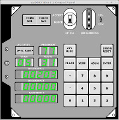 |
Startup screen, immediately after starting
simulation. |
Actually, this is not really the first
thing you see, but just the first screen that persists long
enough to take a screenshot of it. At first, it will really show "PROGRAM 00" rather than "PROGRAM 77", because the AGC is in "major mode" 00. What has happened, however, is that on power-up the AGC hasn't been able to detect any Inertial Measurement Unit (IMU), because we don't have a simulation for one hooked up to it! Detecting this condition, a specific AGC program called the "Night Watchman" has detected this condition and decided to flip over to major mode 77 ... which isn't documented, as far as I can tell, and none of the original AGC developers I've contacted remember it, including Jim Kernan, who was Solarium's "rope mother". Of the other items displayed, "VERB 05" is an "octal display of data" while "NOUN 31" indicates that the data being displayed is "Failreg", the failure register. The 5-digit displays, I believe, are the last three error conditions reported, of which only one, 00203 actually has an error code in it. Thus, you are seeing "Alarm 00203". According to the source code, alarm 00203 is "NO IMU MODE INDICATED TO COMPUTER". The IMU mode is communicated to the AGC through its input register IN2, I believe, which is all zeroes at this point, given that there is no IMU, and all zeroes is not recognized as a legitimate IMU mode. |
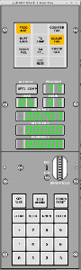 |
| 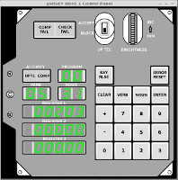 |
V36E |
No problem. Let's use V36E, "Fresh
Start". It doesn't get rid of the Alarm 00203 message,
but at least it does put us into major mode 00, as we're
entitled, I expect. |
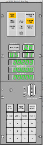 |
| 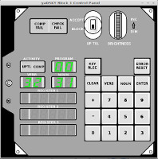 |
V32EEE | I don't actually know how to get rid of
that Failreg display, short of instructing the AGC to
display something else ... or we could use V32E, "Bump
displays", i.e., scroll the register display downward.
To get rid of all 3 error codes, we have to do it three
times. |
 |
| 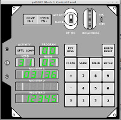 |
V31N02E |
We could use V32N02E to let us display
the contents of the AGC's memory. What you see if you
use this command is that the "REGISTER 3" display clears,
and we can enter an octal address. These addresses are
what I personally call "flat" addresses, though I think
there may be some official buzzword for it that I don't
recall at the moment. With flat addresses, the entire
AGC memory space is simply a continuous one from octal
addresses 000000 through 071777, where
So if, for example, I now entered 12345E (into the open
space for REGISTER 3), what I should get is the
contents of 05,6345, which a quick check of Solarium's
assembly listing reveals to be 03136. And amazingly,
that's what the DSKY shows in REGISTER 1 as well. At this point, you can actually keep examining as many
memory locations as you like, just by pressing ENTER, then
a new octal address, and then ENTER again. It
doesn't seem to work for registers, though. Perhaps
the address should be kept at 060 or higher. |
 |
| 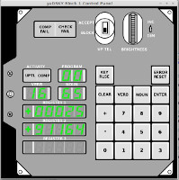 |
V16N65E |
Or perhaps, we might want to display the
time since startup. V16, " Monitor (in decimal) all
component (s) of", combined with N65E, "Time (Hours and
Seconds)", does the trick. The terse descriptions of the verbs and nouns from resources like R-467 make it a bit tough to figure out what we're actually seeing on the DSKY's display, but you can figure it out with a little bit of cogitation:
|
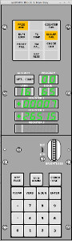 |
| 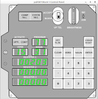 |
V15N31E V21N27E 77777E KEY REL |
Or, if you were crazy — but you are reading
this page, so what does that say about you? And I'm writing it, so
what does that say about me? — you could manually start SOLARIUM's
built-in self-test program. If an error is detected, it shows up in REGISTER 2. REGISTER 2 holds 00000 if no failure has been detected, whereas otherwise it holds the address in AGC memory immediately following the point at which the self-test code detected the failure. To interpret what that means you have to actually look at the assembly listing of SOLARIUM's self-test code. Horrifying! For example, if REGISTER 2 held 06305, you'd look for the address 06304 (actually 11,6304) in the self-test code, and you'd find out that it was an error in the check of the DV (divide) instruction, because you'd find this:... User friendly? No! But very fine-grained. And
obviously not very instructive unless you can make the self-test fail
somehow! But that's not going to happen unless our Block I AGC
emulator itself fails. And the only way you could make it fail is
to modify
the source-code of the Block I emulator (yaAGCb1)! Which wouldn't
be my recommendation. (Actually, I tell a lie: If you used
yaAGCb1's built-in debugger, you could introduce errors at will without
modifying yaAGCb1's source code. I'll leave this as an exercise
for the advanced student.) But I can say that the self-test has
revealed errors in the past, resulting in the correction of bugs in the
emulator, so the emulator would not be what it is today without
SOLARIUM's self-test. On the other hand, I'll also point out that SOLARIUM's isn't the
only Block I test code available, and there are more-comprehensive tests
than those in SOLARIUM in the Block I program called SUNRISE.
SUNRISE flew in no missions, as its purpose in life was to act as a test
suite. So as an alternative demo of Block I, you could run
SUNRISE 69 rather than SOLARIUM. Some or all of the tests available in SUNRISE 69 are listed here. (Read both the SUNRISE 45 and SUNRISE 69 blurbs!) |
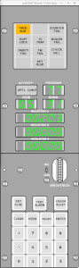 |

{kind=link}
{kind=link}
{kind=link}
{kind=link}
{kind=link}
{kind=link}
{kind=link}
{kind=link}
{kind=link}
{kind=link}